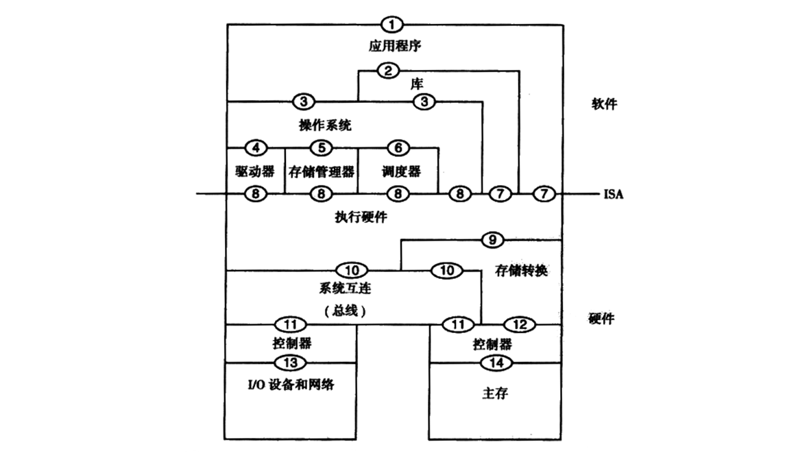

《虚拟机系统与进程的通用平台》基础概述
这本书读起来比较学术，所以看心情挑着读读。（翻译质量奇差）
Chapter 1：虚拟机导论
- Page 16指令集（I386 \ X86-64 \ PowerPC）一般会作为中间接口。CPU 设计师和编译器工程师分别按照这个 ISA 中的指令集来设计硬件芯片和软件的高级语言编译器。另外的标准化接口还有操作系统调用。而多种接口规范的存在，也导致了软件的可移植性降低。
- Page 16形式上，虚拟化是构建一个将虚拟客户系统映射到真实主机系统的同态。通常，两者的细节是相同的。
- Page 19计算机系统体系结构，如下图。2 和 3 分别是系统调用接口与 lic \ libcxx 等库中提供的接口；7 和 8 分别为用户指令集与操作系统指令集。ISA 是划分软件和硬件两个层面的分界线。ABI 由 3（系统调用 ABI，比如 X86-64 下不能使用 rcx 传参，相对于 ISA 的调用约定可能会有些许不同）和 7（ISA 调用约定，cdecl \ System-V-AMD64 ABI 等）组成；API（源代码级别）由 2 和 7（个人理解是指单纯的指令调用）组成。

C ABI 规定内容（其中一部分内容由 Calling-Convention 决定）：
- 预定义类型（char、int、float 等）的大小和布局；
- 复合类型（array 和 struct）的布局；
- 编程人员定义的名称的外部（链接器可见）拼写；
- 机器码函数调用序列；
- 堆栈布局；
- 寄存器使用；
C++ ABI 包括 C ABI，除此之外还有：
- 层次结构类对象（即，基类和虚拟基类）的布局；
- 类成员指针的布局；
- 传递隐藏函数参数（例如 this）；
- 如何调用虚拟函数：
- Vtable 内容和布局；
- 指向 vtable 的指针在对象中的位置；
- 查找 this 指针调整；
- 查找基类偏移；
- 通过指向成员的指针调用函数；
- 管理模板实例；
- 名称的外部拼写（“Name Mangling”）；
- 构造和析构静态对象；
- 抛出和捕获异常；
- 标准库的一些细节：
- 实现定义的细节；
- 类型信息和运行时类型信息；
- 内联函数对成员的访问；
- Page 21进程级虚拟机：能够支持一个独立进程，虚拟机负责仿真用户级指令和系统调用（比如 Wine）；系统级虚拟机：提供完整的系统环境，使其可以支持操作系统及其潜在的许多用户进程，它使得客户操作系统能够访问底层的硬件资源（比如 VirtualBox、VMware）。
- Page 25早期的系统级虚拟机在实现时，VMM（Virtual Machine Manager）是直接安装在裸机上的，上面再装上虚拟机。VMM 在最高特权模式下运行，而客户机系统运行时的特权要少一些。VMM 会拦截并执行所有客户机操作系统发出的与硬件资源交互的动作。而后期另一种可选的系统虚拟机即所谓的“宿主虚拟机”，即安装在宿主操作系统上，不需要 VMM 的支持，但缺点是效率较低。
- Page 25在系统虚拟机中，VMM 的一个主要特色是提供了对平台的复制。VMM 可以访问并管理所有硬件资源，当客户机操作系统要执行一个特定操作时（比如直接访问共享硬件资源的特权指令），这个操作将由 VMM 来解释并检查正确性，再由 VMM 替客户机执行。
- Page 28虚拟机分类法：

进程虚拟机：
- 多道程序设计；
- 仿真器和动态二进制解释器：在为某个指令集设计的硬件上仿真另一个指令集（如 Intel IA-32 EL），最简单的方法是解释；
- 相同 ISA 下的二进制优化器（如 Dynamo）；
- 高级语言虚拟机（HLL）：平台独立性（如 JVM）；
系统虚拟机：
- 标准虚拟机和宿主虚拟机：前者 VMM 直接安装在裸机上；后者安装在宿主操作系统上；
- 全系统虚拟机（主机和宿主机的 ISA 不同，导致翻译的代码通常不能利用底层系统的 ISA 在虚拟内存管理和陷阱处理等方面的特性）；
- 协同设计虚拟机：硬件优化（创建新的 ISA，改善硬件实现的性能和功耗。如 Transmeta Crusoe 处理器，底层采用了 VLIW（Very Long Instruction Word）指令集来优化性能、节省功耗，上层采用 CMS，即“代码变形”软件来转换上层 ISA 指令到本机指令集）；
- Page 28一个例子：Java 应用（JVM）-> Linux IA-32（VMware）-> Windows IA-32（CMS）-> Crusoe VLIW；
Chapter 2：仿真：解释和二进制翻译
- Page 30陷阱和中断：
- 陷阱（trap）：一般可以理解为“软中断”，发生在用户进程中。常用于处理运行时异常（如除零、无效内存访问等）或者进行系统调用；
- 中断（interrupt）：一般单纯指由“硬件”引发的中断；
- Page 31译码分派（decode-and-dispatch）解释器：逐条指令地执行源程序来运行，并根据读取到的指令修改源状态。解释的性能代价会相当高。即使解释器代码用汇编语言编写，解释一条像“取字并置零”的单一指令仍需要包含目标 ISA 中数十条指令的执行。
- Page 34线索解释（Threaded Interpretation）：在当前指令处理例程结束之前以某种方式（直接、间接查表等）直接跳转到下一个指令处理例程继续执行，进而省去循环分派的过程，降低 CPU 分支预测产生的损耗。
- Page 34预译码（Pre-decoding）：将指令的操作码和扩展操作码合并为一个单独的预译码操作码，同时将操作数或立即数等参数按照字节对齐的方式进行存放。这在简化了原指令序列的同时，也会易于虚拟机的访问。一个预译码（针对 IA32）的基本结构如下：
#define CODE_SIZE 1024
struct instruction {
unsigned long op; // 此处可以用 OpCode 处理例程的地址代替（DTC）；
unsigned char dest;
unsigned char src1;
unsinged int src2;
} code[CODE_SIZE];
（待更新。大概率不会更新了，翻译质量太差）
评论 | Comments